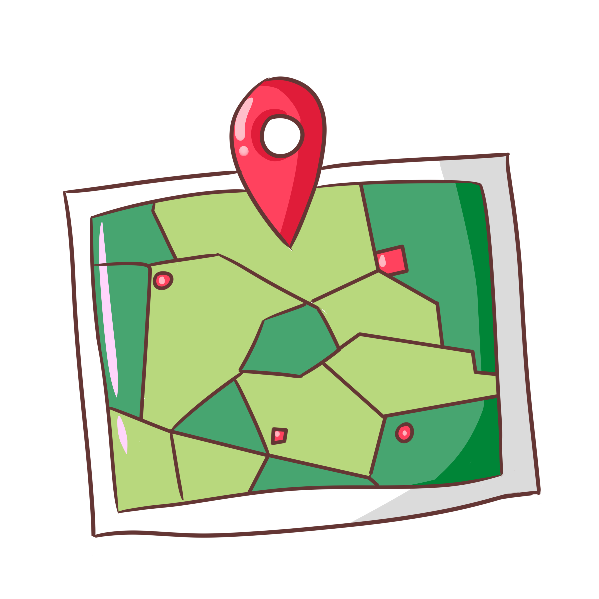
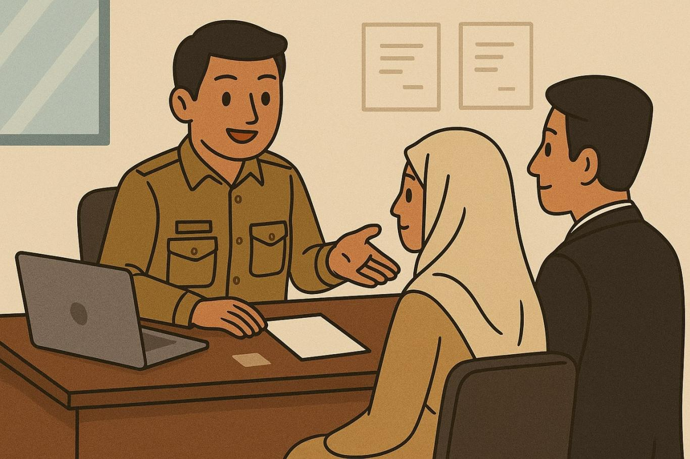

Surat Keterangan Belum Pernah Menikah
Pelayanan penerbitan surat keterangan status belum pernah menikah untuk keperluan administrasi.
Surat Keterangan Berpenghasilan Tidak Tetap
Surat keterangan estimasi jumlah penghasilan rata-rata per bulan bagi pekerja sektor informal.
Surat Keterangan Bertempat Tinggal (KTP Luar)
Keterangan bertempat tinggal sementara untuk pemegang KTP dari luar Kota Balikpapan.
Surat Keterangan Domisili (KTP Teritip)
Keterangan tempat tinggal domisili resmi bagi warga pemegang KTP Kelurahan Teritip.
Surat Keterangan Janda / Duda
Surat keterangan status janda atau duda akibat adanya perceraian atau pasangan meninggal dunia.

Surat Keterangan Pemekaran Wilayah
Keterangan penyesuaian alamat atau nomor RT akibat penataan & pemekaran wilayah administratif.
Surat Keterangan Orang Yang Sama
Surat keterangan pembenaran identitas bagi warga yang memiliki perbedaan nama pada dokumen resmi.

Surat Keterangan Pengantar Nikah
Surat pengantar rekomendasi pernikahan dari kelurahan untuk pendaftaran di KUA.

Surat Keterangan Ahli Waris
Keterangan resmi mengenai silsilah keluarga dan susunan para ahli waris dari pewaris.